c't > Know-how
Andreas Birk
An der nächsten Ecke links ...
Karten bauen (nicht nur) mit dem c't-Bot
Autonome Roboter können sich nicht nur selbstständig durch unbekannte Räume bewegen. Bringt man ihnen geeignete Kartierungstechniken bei, merken sie sich auch, wie ihre Umgebung aussieht.
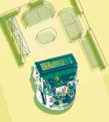 Anfangs konzentrierte sich die künstliche Intelligenz fast ausschließlich auf „körperlose“ Software in Form von logikbasierten Systemen. Rodney Brooks illustrierte dagegen Mitte der Achtzigerjahre eindrucksvoll, dass eine physikalische Interaktion mit der Welt und teilweise recht einfach gestrickten Verhaltensmustern ein ernst zu nehmender alternativer Ansatz zum Erforschen von Intelligenz ist. Diesem Ansatz folgte bisher auch der c't-Bot [1, 2].
In den letzten Jahren ist die Robotikforschung dazu übergegangen, beide Ansätze zu kombinieren. Heutige intelligente Roboter sind eigentlich immer Mischwesen, die eine gute Portion an schnellen, einfachen Verhaltensmodulen mit Weltmodellen und zielgerichtetem Handeln paaren.
Kartentypen
Die wichtigste Form von Umgebungsmodellen in der Robotik sind Karten. Diese erlauben dem Roboter, gezielt an bestimmte Orte zu kommen, Hindernisse zu umfahren oder einem Nutzer wertvolle Informationen über den Einsatzort des Roboters zu übermitteln. Es gibt zwei unterschiedliche Grundtypen von Roboterkarten: topologische und metrische Karten.
In einer topologischen Karte bilden die Orte die Knoten und die Verbindungen die Kanten eines Graphen. Eine Umsetzung für die vom Simulator c't-Sim produzierten Labyrinthe [1], in denen der c't-Bot den Weg zum Ausgang suchen soll, könnte die Kreuzungen und Ecken als Knoten und die Gänge als Kanten in einem Graph abbilden. Teilt man die Abzweigungen anhand der Anzahl der abgehenden Gänge ein, erhält man markante Stellen mit Zusatzinformationen: Ein „L“ steht für eine Biegung um 90 Grad, bei einem „T“ trifft ein Gang senkrecht auf einen zweiten und beim „X“ kreuzen sich zwei Gänge. „SG“ kennzeichnet das Ende von Sackgassen als markanten Punkt.
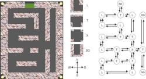
Topologische Karten repräsentieren markante Orte und die Verbindungen zwischen ihnen in Form eines Graphen.
Die Bewegungen des Roboters durch die Gänge lassen sich anhand der vier Himmelsrichtungen klassifizieren. Mit Hilfe der Bezeichnungen „N“, „S“, „W“, „O“ können die Kanten speichern, wie man von einem Ort zu einem benachbarten kommt. Legt man zusätzlich Informationen über die Länge des Weges von einer Abzweigung zur nächsten in den Kanten ab, lässt sich der kürzeste Weg zu einem bestimmten Ort ermitteln.
Die größte Herausforderung für eine Implementierung einer topologischen Karte auf dem c't-Bot wäre die zuverlässige Erkennung der verschiedenen Abzweigungen, da der Roboter für die Wegsuche nur zwei nach vorne schauende Abstandssensoren besitzt. Er müsste daher regelmäßig größere Drehungen durchführen, um zu testen, ob von seiner Position Gänge abzweigen.
Für den c't-Bot in seiner derzeitigen Ausstattung eignen sich metrische Karten besser. Während eine topologische Karte Orte nur durch ihre Eigenschaften beschreibt, gibt eine metrische Karte deren exakte Koordinaten im Raum an.
Theoretisch gibt es zwei Alternativen: Raster- und Vektorkarten. Auf den ersten Blick erscheinen die bei GIS-Anwendungen gern genutzten Vektorkarten durchaus interessant. Diese Variante der metrischen Karten speichert ähnlich kompakt wie die topologischen Karten nur das, was tatsächlich wichtig ist, inklusive beliebiger Metainformationen und braucht daher relativ wenig Speicherplatz. Allerdings ist sowohl ihre direkte Herstellung als auch ihre Umwandlung aus einer Rasterkarte recht aufwendig.
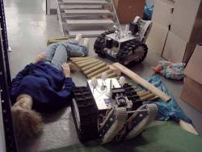
Zwei Rettungsroboter der International University Bremen (IUB) proben einen Einsatz in unbekannter Umgebung.
Typischerweise bilden daher auch professionelle Roboter die Informationen in Rasterform ab: Jedes Element eines zwei- oder dreidimensionalen Arrays entspricht einer räumlichen Zelle mit festgelegten Ausdehnungen, was sich einfach in einer Bitmap ablegen lässt.
Ein mobiler Roboter braucht vor allen Dingen Informationen über Hindernisse in seiner Umgebung. Gerasterte Hinderniskarten speichern deshalb in jeder Zelle, ob der Weg für den Roboter frei oder blockiert ist.
Evidence Grids
Die als Oberbegriff für diese Hinderniskarten häufig benutzte Bezeichnung Occupancy Grid (Belegungsraster) ist etwas irreführend, da diese je nach Anwendung beliebige Umweltinformationen, beispielsweise die Lichtverhältnisse, aufnehmen können. Der häufig synonym verwendete, sprachlich zutreffendere Begriff Evidence Grids (Beweisraster) bezeichnet streng genommen aber nur eine Untergruppe der Occupancy Grids.
Die von dem Robotikpionier Hans Moravec in den achtziger Jahren entwickelten Evidence Grids sind eine klassische Methode, Hinderniskarten zu erstellen. Mit dem in der Rasterkarte gesammelten Beweismaterial (Evidence) kann der Roboter den wahren Zustand der Welt an den untersuchten Stellen mathematisch korrekt erschließen.
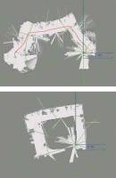
Diese beiden Karten hat ein IUB-Rettungsroboter gleichzeitig in einer U-förmigen Umgebung aufgenommen. Die obere Auswertung lieferte ein Evidence-Grid-Algorithmus, die untere Karte zeigt die Ergebnisse eines speziellen SLAM-Algorithmus [6].
Auch ein Evidence Grid liefert für jede Zelle Informationen darüber, ob der zugehörige Ort belegt ist. Die Entscheidung darüber ist für einen Roboter aber gar nicht so einfach, wie es zunächst scheinen mag: Reale Sensordaten enthalten immer eine gehörige Portion Rauschen, was sich bei der Auswertung nicht nur in den häufigen kleineren Abweichungen vom Idealwert äußert, sondern gelegentlich auch zu schwerwiegenden Fehlern führt. Für deren sehr unsystematisches Auftreten sorgen zumeist verschiedenste Umweltbedingungen, die sich schwer oder gar nicht gezielt bestimmen lassen. Daher werden in den Zellen eines Evidence Grid auch keine absoluten booleschen Werte „frei“ oder „belegt“ gespeichert, sondern Wahrscheinlichkeiten oder zumindest Werte, die eine gewisse Zuversicht in die Informationen wiedergeben.
Zum Bestimmen der Zellenwerte wird der Satz von Bayes genutzt, der für probabilistisches Lernen im Allgemeinen sehr beliebt ist. Er erlaubt, durch Wahrscheinlichkeiten ausgedrückte Überzeugungen beim Bekanntwerden neuer Hinweise zu aktualisieren. Im Satz von Bayes
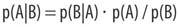
steht p(X) für die Wahrscheinlichkeit des Eintretens von Ereignis X. p(X|Y) bezeichnet die bedingte Wahrscheinlichkeit von Ereignis X unter der Bedingung, dass Ereignis Y vorher eingetreten ist. Durch Bayes’ Theorem lässt sich also die Wahrscheinlichkeit, dass A eintritt, wenn man vorher B gesehen hat, auf die Wahrscheinlichkeiten von A, von B und von B unter der Bedingung A zurückführen.
Die Nützlichkeit dieser Formel wird am Beispiel „Karten lernen“ schnell klar: Die zentrale Frage ist, ob ein erhaltener Sensorwert tatsächlich auch bedeutet, dass ein Hindernis vor dem Bot steht. Man will also grundsätzlich für jede Zelle Z(x,y) die bedingte Wahrscheinlichkeit p(Zelle belegt | Sensorwert) berechnen.
Beim Evidence Grid wird diese bedingte Wahrscheinlichkeit nun nicht direkt verwendet, sondern stattdessen die Chance gespeichert, dass die Zelle belegt ist:
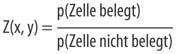
Die Anwendung des Satzes von Bayes auf diese Formel hat zwei interessante Auswirkungen: Zum einen lässt sich dadurch auch Information über das Verhalten des Sensors, wenn die Zelle nicht belegt ist, mit einbeziehen. Zum anderen erhält man eine Formel, die ein bekanntes Modell des Sensors p(Sensorwert | Zelle belegt) nutzt:
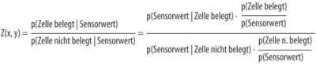
Dies lässt sich noch vereinfachen:
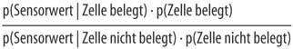
Die Wahrscheinlichkeit, dass eine Zelle belegt oder nicht belegt ist, wird zu Beginn einfach mit 0,5 angenommen und dann fortlaufend mittels der aktuellen Sensorwerte und dem Sensormodell aktualisiert.
Dabei nimmt man übrigens an, dass alle Messungen unabhängig voneinander sind. Daher kann ein Zellenwert, der durch Sensorwert_alt berechnet wurde, in die Aktualisierung bei Eintreffen des Sensorwert_neu mit einfließen:
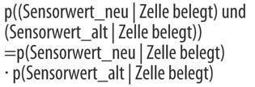
Das Gleiche muss natürlich auch für eine nicht belegte Zelle gelten.
Vereinfachung
Moravec hat aus dieser grundlegenden Idee innerhalb mehrerer Jahre eine einfacher implementierbare Variante entwickelt. Die Berechnungen vereinfachen sich erheblich, wenn man auf beiden Seiten der obigen Formeln den Logarithmus anwendet:
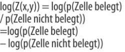
Dadurch verwandeln sich alle Multiplikationen in Additionen. Durch Skalieren kann man die so erhaltenen Werte auf einen geeigneten Integerbereich abbilden. Beim c't-Bot stellt schon ein Byte pro Zelle recht gut den aus den Sensordaten extrahierten Level der Zuversicht dar. Wandelt man die erhaltenen Werte für die Darstellung der Zellenbelegungen in Werte mit Vorzeichen um, lässt sich mit den 8 Bit der Bereich von -128 bis 127 nutzen.
Der Wert null bedeutet, dass keine gesicherte Information über den Zustand der Zelle vorliegt. Negative Werte entsprechen einem Hindernis in der Zelle, positive Werte einem freien Weg. Der Betrag des Zellenwerts zeigt den Grad der Zuversicht über die Qualität der Informationen an. Je höher der Betrag, desto höher ist die Sicherheit, dass sich die Zelle im angenommenen Zustand befindet. Der Wert -128 steht also dafür, dass eine Zelle sicher blockiert ist. Umgekehrt bedeutet 127 einen sicher freien Weg. Zellen, die trotz vieler Messungen Werte mit kleinerem Betrag aufweisen, können beispielsweise auf problematische Bereiche mit schlechten Sensorwerten hinweisen.
Bei der Implementation werden wir nicht mehr ganz der exakten mathematischen Theorie folgen. Dafür schlägt sich dieser leicht vereinfachte Algorithmus in der Praxis insbesondere auf einfachen Systemen wie dem Mikrocontroller des c't-Bot genauso gut. Einen dafür geeigneten Code skizzieren wir im Kasten auf Seite 200.
Implementierung
Auf der Basis der oben erläuterten Zellenwerte ist es recht einfach, eine Hinderniskarte zu erstellen: Zu Beginn wird die Karte mit Nullen initialisiert - es liegen keine Informationen vor. Jedes Mal, wenn der Roboter nun über seine Sensoren Daten für eine bestimmte Zelle erfasst, aktualisiert er deren Inhalt: Misst er an der zugehörigen Stelle ein Hindernis, wird der Wert in der Zelle um 1 verringert, misst er keins, wird der Wert um 1 erhöht. Dabei darf kein Unter- oder Überlauf auftreten.
Diese Addition entspricht einer Multiplikation der Wahrscheinlichkeiten in der nicht logarithmisierten Version der obigen Formeln. Je nach Vertrauen in die Sensordaten kann die Stufenbreite natürlich auch höher ausfallen. Bei einer Stufenbreite von 1 muss der Roboter mindestens 127-mal einen Sensorwert für eine bestimmte Zelle erfassen, um eine maximale Zuversicht zu diesem Ort zu haben. Dies geschieht recht schnell, da in einem Schritt mehrere Zellen gleichzeitig aktualisiert werden.
Mit der Umsetzung dieses Algorithmus ist natürlich noch nicht alles getan: Vor dem Start der Kartierung braucht man eine Abschätzung des Areals, das der Roboter abdecken soll, und eine sinnvolle Auflösung. Solange der Speicher mitspielt, sind beliebige Kombinationen aus Kartenabmessungen und Auflösungen möglich. Beides hängt natürlich stark von der konkreten Anwendung ab. Die entsprechenden Konstanten lassen sich im Code über defines einfach ändern.
Damit der Code tatsächlich konkrete Daten verarbeiten kann, muss der Roboter zunächst aber zwei grundlegende Fähigkeiten haben. Er muss erstens wissen, wo er sich befindet. Zweitens muss er die Informationen zu freien Wegen und Hindernissen aus den Sensordaten extrahieren.
Lokalisierung
Um sich zu lokalisieren, muss ein Roboter seine Position und Orientierung bestimmen. Wie man das beim c't-Bot über Rad-Encoder und Maussensor machen kann, haben wir bereits in einem früheren Artikel beschrieben [3]. Die so erhaltene Kombination aus x- und y-Koordinaten mit einem die Orientierung beschreibenden Winkel heißt in der Robotik auch Pose. Die Pose wird als Vektor (x, y, o) angegeben und ist immer relativ zum Weltkoordinatensystem, das in der Robotik auch als Weltframe bezeichnet wird.
Die Lage des Ursprungs in diesem Koordinatensystem - beispielsweise in der Mitte oder links unten - und des Startpunkts des Roboters in der realen Welt sind zwar prinzipiell beliebig, müssen aber aufeinander abgestimmt sein, damit die erhaltenen Sensorwerte den Zellen sinnvoll zugeordnet werden. Der physikalische Punkt in der realen Welt, auf dem der Roboter die Kartierung startet, entspricht der Pose, mit der er initialisiert wird. Dies kann der Einfachheit halber der mit einer Pose von (0, 0, 0) zu initialisierende Ursprung des Weltframes sein, muss es aber nicht. Wichtig ist in jedem Fall, dass nicht nur die Position, sondern auch die Orientierung stimmt. Sollen die Karten von verschiedenen Läufen unmittelbar vergleichbar sein, muss die Pose bei jedem Start auch zu den vorherigen Läufen passen.
Man sollte im Hinterkopf behalten, dass sich die Fehler der Positionsbestimmung durch Encoder und Maussensor über die Zeit addieren. Insbesondere Winkelfehler können nach einer Weile zu einer erheblichen Abweichung zwischen der berechneten Pose des Roboters und seiner wahren Position und Orientierung in der Welt führen. Sammelt der Roboter dann weiter Informationen, kann die daraus folgende Aktualisierung falscher Zellen des Grid eine bereits recht gute Karte wieder zerstören. Dies ist übrigens ein Aspekt, den Moravec bei der Entwicklung der Evidence Grids komplett vernachlässigt hat.
Hindernissensoren
Der einfachste Hindernissensor des c't-Bot ist nicht unbedingt offensichtlich: der Roboter selbst. Die Pose repräsentiert zwar nur einen Punkt im Weltframe, aber natürlich muss die gesamte Grundfläche des Roboters frei von Hindernissen sein. Sobald sich die Pose ändert, kann man daher bei allen vom Roboter bedeckten Zellen den Wert um 1 erhöhen.
Zur direkten Bestimmung von Hindernissen besitzt der c't-Bot zwei nach vorne gerichtete Abstandssensoren und zwei nach unten gerichtete Lichtschranken, die einen Abgrund melden. Über die Pose des Roboters lassen sich mit deren Werten die jeweils ermittelten zwei Zellen als mit Hindernissen belegt markieren. Da die Infrarotstrahlen der Sensoren freien Raum passieren müssen, bevor das Hindernis sie reflektiert, können bei jeder Messung die zugehörigen Zellen als „frei“ aktualisiert werden - sofern dort kein Abgrund ist. Ein dafür geeignetes Verfahren ist im Kasten für einen Abstandssensor beispielhaft näher erläutert.
Je nach Auflösung des Grid und Entfernung des Hindernisses überwiegt die Anzahl der in jedem Schritt als frei erkannten Zellen mehr oder weniger stark die der Zellen mit neuen Hindernisinformationen, denn die beiden Sensoren erfassen vom Roboter bis zu den potenziellen Hindernissen alle nicht als Abgrund erkannten Zellen als „frei“. Da Hindernisinformationen sehr wichtig sind, lohnt es sich, diese höher zu gewichten, um eine seltenere Aktualisierung der zugehörigen Zellen im Schnitt wieder wettzumachen: Dazu kann man bei einem Hindernis den Zellenwert statt mit -1 beispielsweise mit -10 aktualisieren.
Im Prinzip hat man damit alle Zutaten beisammen, um Karten auf dem c't-Bot zu erstellen, die als Grundlage für verschiedenste „intelligente“ Verhaltensweisen auf dem Roboter dienen können.
Ganz professionell
Bei der Entwicklung einer Kartierung für professionelle Roboter, beispielsweise zur Erkundung eines unübersichtlichen Geländes bei Katastrophen, geht man prinzipiell ähnlich vor. Allerdings sind die Voraussetzungen etwas üppiger: So setzt man auf großzügig mit Rechenleistung ausgestattete Computer und komfortable Programmierumgebungen, die vielfältige Standardbibliotheken unter anderem für fortgeschrittene mathematische Funktionen enthalten. Trotzdem versucht man natürlich zunächst, die Sensorausstattung der Roboter zu optimieren. So lokalisieren diese sich zwar wie der c't-Bot mit Hilfe von Rad-Encodern. Die verwendeten Quadratur-Encoder haben aber eine erheblich höhere Auflösung mit mehreren hundert Pulsen pro Umdrehung und zwei Kanälen, deren Rechtecksignale um 90 Grad phasenverschoben sind. Damit lässt sich über die Abfolge der paarweisen High- oder Low-Werte auch die Drehrichtung der Räder zuverlässig bestimmen, und die Anzahl der Pulse pro Umdrehung verdoppelt sich.
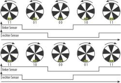
Bei einem Quadratur-Encoder sind zwei Sensoren so montiert, dass ihre Rechtecksignale um 90 Grad phasenverschoben sind.
Auch bei einer höheren Auflösung leiden Encoder immer noch unter dem prinzipiellen Problem, dass sich ihre Fehler kumulieren. Daher verwendet man zumindest für die Bestimmung der Orientierung des Roboters zusätzliche Sensoren. So kann ein digitaler Kompass die absolute Ausrichtung des Roboters messen. Zusätzliche Gyroskope verbessern die Genauigkeit bei der Bestimmung der Orientierung erheblich.
Bei den Hindernissensoren liefern Laserscanner die zentralen Daten. Vereinfacht wirken diese Sensoren wie eine ganze Armada von Infrarotsensoren, die fächerförmig ihre Strahlen aussenden. Während letztere aber die Intensität der reflektierten Strahlen bestimmen, beruht das Grundprinzip der Laserscanner wie bei Ultraschallsensoren auf einer Wegstreckenmessung über die Laufzeit: Es wird die Zeit gemessen, die ein ausgesendeter Laserpuls benötigt, um über eine Reflexion an einem Hindernis zurück zum Sensor zu gelangen.
Auch mit Grips
Grundsätzlich gilt die Strategie „Je mehr Sensoren mit unterschiedlichen Schwächen, desto besser“. Trotzdem ist modernes Kartenbauen nicht nur eine reine Materialschlacht. Auch die Algorithmen sind seit der Erfindung der Evidence Grids nicht stehen geblieben. Die jüngste Entwicklung sind SLAM-Algorithmen (Simultaneous Localization and Mapping), die das gleichzeitige Lokalisieren und Kartenbauen optimieren sollen [4, 5]. SLAM-Algorithmen versuchen das Henne-Ei-Problem zu lösen, dass man eine Karte am besten dann aufbauen kann, wenn man bereits eine Karte hat: Es wäre hilfreich, wenn der Roboter beim Start bereits wüsste, wo er sich befindet, und wegen der schlechten Lokalisierungssensoren könnte er auch während der Messungen eine Karte gut gebrauchen, um festzustellen, wo er sich wirklich hinbewegt hat.
Prinzipiell folgen alle SLAM-Algorithmen dem gleichen Muster. Ausgangspunkt ist eine mit Hilfe der vorhandenen Lokalisierungs- und Hindernissensoren erstellte Basiskarte. Sollten keine Lokalisierungssensoren vorhanden sein, reicht auch der Input an die Motoren zum Abschätzen der Roboterbewegungen. Die dadurch entstehende Karte ist zwar zunächst recht ungenau, kann aber helfen, die Lokalisierung zu verbessern. Durch einen ständigen Abgleich der neuen mit den bereits vorhandenen Informationen kann man gleichzeitig auch noch die Parameter der zugrunde liegenden Algorithmen adaptieren.
Für den c't-Bot kann man dieses Szenario wie folgt illustrieren: Aufgrund der bisher gelernten Karte hat der Roboter eine gewisse Erwartungshaltung, was er als Nächstes „sehen“ wird. Er könnte daher versuchen, anhand der momentanen Motoraktivierungen und der bestehenden Karte vorherzusagen, welche Werte die Hindernissensoren im nächsten Schritt liefern werden. Den Vergleich der Erwartung mit den tatsächlichen Sensorwerten könnte er nutzen, um das zugrunde liegende Modell, das heißt, sowohl die Karte als auch die Vorhersage der Roboterbewegungen aufgrund von Motoraktivierungen zu verbessern.
Eigene Experimente
Für den Einstieg muss man aber noch gar nicht so tief in die Trickkiste greifen. Schließlich waren die Evidence Grids noch bis vor wenigen Jahren auch in der professionell betriebenen Robotik der Standard in Sachen Karten. Bereits in der vorgestellten Weise kann man auf dem c't-Bot ein durchaus brauchbares, vielfältig erweiterbares Kartenprogramm implementieren.
Es empfiehlt sich, mit den ersten Experimenten zunächst im Simulator c't-Sim zu beginnen. Zum einen ist dort die zu erfassende Umgebung stark vereinfacht, und die Sensorwerte sind trotz der Anpassung an die realen Sensoren durch möglichst realistische Kennlinien noch etwas zuverlässiger: Im Sim sorgen weder Teppichwellen noch auf dem Boden liegende Kabel für einen Versatz des Bots, und es gibt auch keine Sensorfehler beispielsweise durch zu stark spiegelnde Oberflächen.
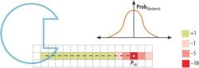
Um Sensorfehler besser zu berücksichtigen, aktualisiert man auch die Nachbarn der direkt gefundenen Hinderniszellen.
Zum anderen muss man sich im Simulator über den verwendeten Speicherplatz zunächst keine Gedanken machen. Der Parcours-Generator im c't-Sim für das Training zum aktuell laufenden Programmierwettbewerb [7] baut derzeit Labyrinthe, deren Breite und Höhe zwischen 12 und 30 Feldern mit einer Kantenlänge von 24 cm liegen. Die Labyrinthe haben damit Seitenlängen zwischen 2,88 m und 7,20 m. Bei einer Auflösung von 1 cm bräuchte man für eine Karte des größtmöglichen Labyrinths einen Speicherplatz von gut 500 KByte, was im Simulator auf dem PC natürlich überhaupt kein Problem ist.
Beim realen c't-Bot muss man dagegen mit den 2 KByte SRAM, die dort insgesamt für Variablen zur Verfügung stehen, auskommen. Selbst wenn man davon beispielsweise 1600 Byte für das Speichern der Karte einplant, kommt man um ein Austarieren von Kartengröße und Auflösung nicht herum: Bei einer Zellengröße von 1 cm Kantenlänge kann der Bot in der beschriebenen Weise beispielsweise eine 40 cm x 40 cm große Karte aufnehmen. Bei 2 m x 2 m steigt die Auflösung mit 5 cm auf knapp den halben Botdurchmesser. Damit wird die Kartierung natürlich ungenauer. Für den Einstieg sollte man wie im Sim zunächst mit einer vereinfachten Umgebung arbeiten und ausprobieren, welche Genauigkeit sich mit welcher Auflösung tatsächlich erreichen lässt - was unter anderem auch von den für die Kartierung verwendeten Strategien abhängt.
Auch wenn die Hardwareausstattung des c't-Bots natürlich deutlich bescheidener ausfällt als die von High-End-Robotern, die leicht das Hundertfache und mehr kosten können, gibt es genügend Raum für kreative Verbesserungen. Zu den für Optimierungen interessanten Bereichen gehören die Bewegungen des Roboters, um seine Umgebung zu scannen, die Nutzung von Vorwissen über diese Umgebung und die Auswertung der gefundenen Messwerte.
So decken die Abstandssensoren nach vorne mit einem Sehwinkel von etwa 3 Grad und einer Reichweite zwischen 10 und 80 cm mit einer Messung maximal wenige cm Breite ab. Sie erkennen so nur die Hindernisse, auf die der Roboter direkt zufährt. Bei einer typischen Geradeausfahrt merkt er sich daher immer wieder die selben Punkte als „belegt“ und findet kleine Hindernisse nur dann, wenn sie sich zufällig genau vor den Sensoren befinden. Leichte Schlangenlinien könnten den Scan der Umgebung in einem Labyrinth schon deutlich verbessern. Der Roboter tastet dann auch die seitlichen Wände ab und erhält dadurch schneller detaillierte Karten.
Um den Aufbau der so gewonnenen Karte zu verbessern, könnte man bei einer vereinfachten Umgebung wie einem rechtwinkligen Labyrinth die gefundenen Wände am Raster ausgerichtet eintragen und so versuchen, eine durch Lokalisierungsfehler verursachte Drift auszugleichen. Bei fester Rastergröße und Gangbreite könnte man auch ausprobieren, ob sich lückenhafte Zellenbelegungen ohne Messung ergänzen lassen, oder versuchen, die äußere Begrenzung zu erkennen.
Um die Qualität der Informationen zu Hindernissen noch weiter zu verbessern, kann man auch mit einfachen Annahmen die Fehler der Sensoren noch besser berücksichtigen. Sensorfehler sind unter anderem stark von Umgebungsbedingungen wie Lichtverhältnissen und Bodenbelag abhängig, die bei verschiedenen Einsätzen des c't-Bots jedes Mal stark variieren können. Eine allen Eventualitäten entsprechende Modellierung der Sensorfehler wäre daher sehr aufwendig. Idealisiert lassen sich die Wahrscheinlichkeitsverteilungen der Fehler der Hindernissensoren aber über eine Gaußverteilung modellieren. Um dieses Modell ganz einfach umzusetzen, aktualisiert man auch die Nachbarzellen der gefundenen Hinderniszellen mit etwas weniger erhöhten Werten.
Damit sind die Möglichkeiten mit Sicherheit noch nicht ausgeschöpft. Interessante Lösungen zur Kartierung mit dem Bot veröffentlichen wir ebenso wie alle anderen gelungenen Ergänzungen zum Bot- oder Sim-Code gern auf der Projektwebseite. (anm)
Literatur
[1] Webseite zum c't-Bot-Projekt
[2] Christoph Grimmer, Hohe Schule, c't-Bots bewältigen komplexe Aufgaben
[3] Torsten Evers, Wo bin ich?, Positionsbestimmung für den c't-Bot
[4] Michael Csorba, Simultaneous Localization and Map Building, PhD thesis
[5] Sebastian Thrun, Robotic Mapping: A Survey: http://robots.stanford.edu/papers/thrun.mappingtr.html
[7] Webseite zum c't-Sim-Wettbewerb (Anmeldeschluss 8. September 2006)
Hinderniskarten auf dem c't-Bot
Diese auf den c't-Bot zugeschnittenen Codebeispiele helfen bei der Entwicklung einer in einem Array abgelegten Hinderniskarte nach dem vorgestellten Prinzip. GGR ist dabei die Breite des Grid in Zellen, RES die Zellenbreite in mm. Legt man den Ursprung des Weltkoordinatensystems beispielsweise mittig auf die x-Achse, kann man eine Roboterposition (x_pos, y_pos) mit Koordinaten in mm wie folgt auf eine Zelle grid[XROB][YROB] beziehen:
XROB = x_pos/RES + GGR/2;
YROB = y_pos/RES;
Diese beiden Funktionen aktualisieren eine Zelle:
void update_frei (int X, int Y) {
if(grid[X][Y] < 127) grid[X][Y]++;
}
void update_belegt (int X, int Y) {
if(grid[X][Y] > -128) grid[X][Y]--;
}
Diese Zeilen aktualisieren die vom Bot belegte Fläche:
for(X = -60/RES; X <= 60/RES; X++) {
for(Y = -60/RES; Y <= 60/RES; Y++) {
if(X*X + Y*Y <= 60*60/(RES*RES)) update_frei (XROB + X, YROB + Y);
}
}
Die Berechnung der Zellen, die durch die beiden Hindernissensoren aktualisiert werden, ist etwas aufwendiger, aber mit ein wenig Geometrie ebenfalls sehr einfach zu lösen. Die Zellen, die durch den rechten Sensor aktualisiert werden können, liegen auf der Linie zwischen den Punkten Pr und PHr, wobei PHr den Punkt bezeichnet, bei dem der rechte Sensor das Hindernis wahrnimmt (linker Sensor analog). Der Punkt Pr liegt 32 mm rechts vom Zentrum des Roboters, hier mit Prob bezeichnet. Wenn die Variable head die Orientierung des Roboters im Bogenmaß enthält, können die Koordinaten Pr_x und Pr_y (in mm) des Punkts Pr wie folgt berechnet und in Zellenkoordinaten Pr_X und Pr_Y konvertiert werden:
Pr_x = x_pos + (int) (32.0 * sin(head));
Pr_y = y_pos - (int) (32.0 * cos(head));
Pr_X = Pr_x/RES + GGR/2;
Pr_Y = Pr_y/RES;
Ähnlich lassen sich die Zellen-Koordinaten PHr_X und PHr_Y für den Hindernispunkt PHr berechnen. Dabei ist zu beachten, dass der Sensor in vertikaler Richtung etwa 35 mm vom Zentrum des Roboters entfernt liegt. Diesen Wert muss man daher zu der Variablen dr, die die Distanz in mm enthält, addieren:
PHr_x = Pr_x + (int) ((35.0 + dr) * cos(head));
PHr_y = Pr_y + (int) ((35.0 + dr) * sin(head));
PHr_X = PHr_x/RES + GGR/2; PHr_Y = PHr_y/RES;
Nun kann man auf einer Linie von Pr nach PHr alle Zellen als frei markieren. Der Endpunkt PHr wird danach mit dem Wert für „belegt“ aktualisiert:
x = Pr_X; sX = (PHr_X < Pr_X ? -1 : 1); dX=abs(PHr_X - Pr_X);
y = Pr_Y; sY = (PHr_Y < Pr_Y ? -1 : 1); dY=abs(PHr_Y - Pr_Y);
if (dX >= dY) {
h = dX/2;
for (int i=0; i<dX; ++i) {
update_frei (x+i*sX, y);
h += dY;
if (h >= dX) {
h -= dX;
y += sY;
}
}
}
else {
h = dY / 2;
for (int i=0; i<dY; ++i) {
update_frei (x, y+i*sY);
h += dX;
if (h >= dY) {
h -= dY;
x += sX;
}
}
}
update_belegt (PHr_X, PHr_Y);
Version zum Drucken | Per E-Mail versenden | Heft bestellen
Permalink: http://heise.de/-290662
- 2 Klicks für mehr Datenschutz: Erst wenn Sie hier klicken, wird der Button aktiv und Sie können Ihre Empfehlung an Facebook senden. Schon beim Aktivieren werden Daten an Dritte übertragen – siehe i.nicht mit Facebook verbunden

- 2 Klicks für mehr Datenschutz: Erst wenn Sie hier klicken, wird der Button aktiv und Sie können Ihre Empfehlung an Twitter senden. Schon beim Aktivieren werden Daten an Dritte übertragen – siehe i.nicht mit Twitter verbunden

- 2 Klicks für mehr Datenschutz: Erst wenn Sie hier klicken, wird der Button aktiv und Sie können Ihre Empfehlung an Google+ senden. Schon beim Aktivieren werden Daten an Dritte übertragen – siehe i.nicht mit Google+ verbunden

Das aktuelle Heft ist jetzt im Handel erhältlich.
Ältere Artikel können Sie über unser Zeitschriften-Archiv bestellen.